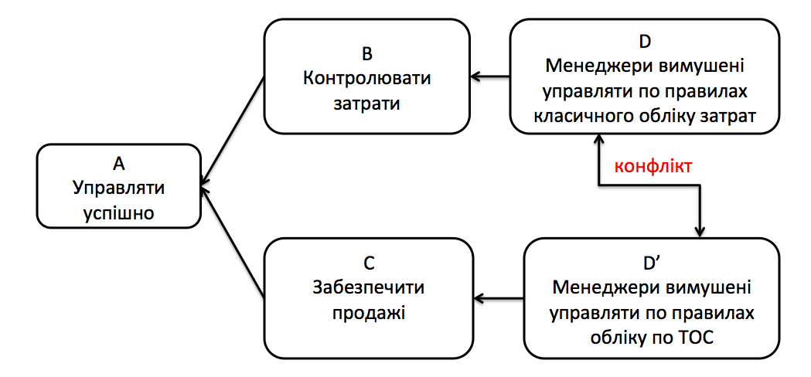

КОМПАНІЯ ВТРАЧАЄ ПРИБУТОК
ЯКЩО ВІДСУТНІЙ ІНСТРУМЕНТ УПРАВЛІННЯ ЗАПАСАМИ
ЯКЩО НАДЛИШКОВІ ЗАПАСИ ЗАТРИМУЮТЬ ОБІГОВІ КОШТИ
ЯКЩО НЕ ВИСТАЧАЄ ХОДОВОГО ТОВАРУ
Чи можна управляти запасами так,
щоб не виникало надлишкових запасів та не втрачати прибуток через
відсутність ходового товару?
Який метод управління запасами обрати

ДИЛЕМА
Щоб управляти ефективно,
менеджери повинні контролювати витрати, та управляти по класичному обліку
затрат.
ЯК ЕФЕКТИВНІШЕ?
Щоб управляти ефективно,
менеджери повинні забезпечити дохід від продажу, та управляти згідно з
правилами обліку по ТОС.
Проблеми, про які ми чуємо від клієнтів